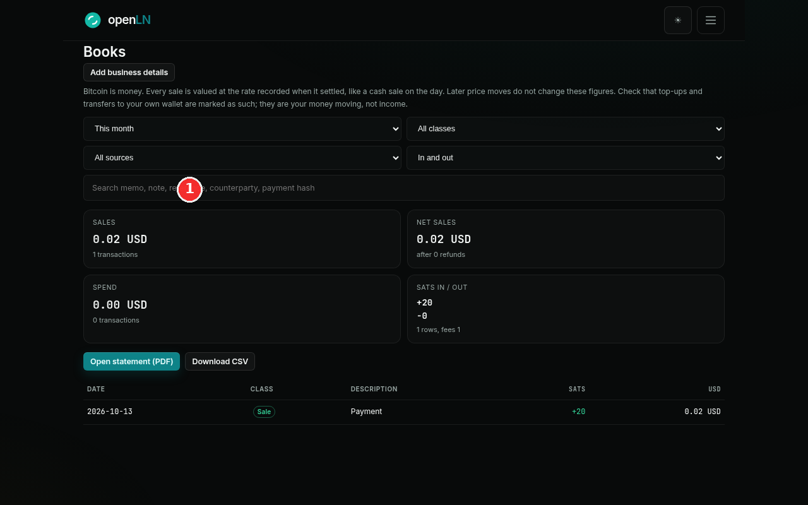
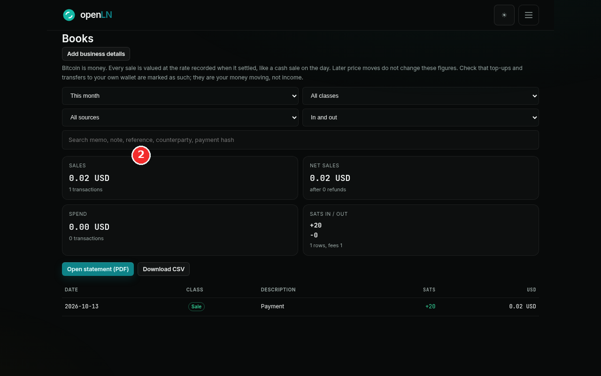

How to review your Books and export a statement
This guide walks you through the Books section of openLN: opening it, setting the period and filters, reading the figures, and handing your accountant a statement or a CSV. Books runs on one plain rule, written at the top of the page: every sale is valued at the rate recorded when it settled, like a cash sale on the day, and later price moves do not change the figures. Reviewing and exporting takes a few minutes.
- You are signed in to your openLN account (any device, phone or computer).
- Your account has a report currency set in Settings (for example USD), so sales can be booked at their fiat value. If the account is still set to sats, Books shows sats only and tells you where to choose a currency.
- That is all. Books is a view over your existing ledger. Payments settle to your own wallet, and openLN holds no balance.
Open Books and set the period, class, and source filters
Open the menu (top right, the button with the three lines) and choose Books. The menu describes it as Statements for your accountant, and that is exactly the job: reading the ledger behind your payments and turning it into records. The page opens on This month, and openLN remembers the filters you last used the next time you come back.
The first control under the heading is the period: This month (the default), Last month, This quarter, This year, Last year, All time, and Custom dates. Custom dates opens two small date fields, so you can type any from and to dates you need.
The class filter starts at All classes and holds one entry per bookkeeping class: Sale for money a customer paid you, Top-up for your own funds that you put into the wallet, Transfer to own wallet for your own sats moving out (a send from the RIC, or to your card), Spend for money you paid out, Refund for a payment sent back to a customer, Fee for fee lines in the ledger, and Needs review for anything openLN could not classify on its own.
The source filter starts at All sources and lists where each payment came through: RIC terminal, Web POS, Lightning address, Wallet, Card, openLN user, and Shop. Beside it, the direction filter sets In and out, Incoming, or Outgoing, which is handy when you only care about money in or money out. Last, the search box matches anything you remember about a payment across its memo, note, reference, counterparty, and payment hash.
One sentence under the heading is the rule for everything on the page: Bitcoin is money. Every sale is valued at the rate recorded when it settled, like a cash sale on the day. Later price moves do not change these figures. In other words, a payment is booked once, at the rate on the clock in that moment, and it stays there. Nothing in Books is ever re-priced at today's rate, so the figures you export later are the figures you saw at settlement. Every change to a filter updates the summary and the rows straight away.

Read the summary and the rows, then export
The four cards under the filters are the summary for your chosen period: Sales with the number of sale transactions, Net sales (sales after refunds), Spend, and Sats in / out with the row count and the fees recorded. All of them are built from the filtered rows, so the totals and the list below always agree. If some rows are still unclassified, an amber line appears in this area telling you to open each one and pick a class so the statement is complete; it disappears once everything is classed.
The list shows one row per movement: the date, a class chip, a short description, the sats amount (plus for money in, minus for money out), and the fiat value that was recorded for it. A Web POS sale of 20 sats, for example, shows as a Sale chip with +20 and 0.02 USD beside it. That 0.02 is the value booked at settlement, and it is final. The list shows the 200 most recent rows; if the period holds more, a note says so and reminds you that the CSV and the statement include everything in the period.
Two classes look like money coming in but are not income, and openLN is strict about them: Top-up is your own funds going into the wallet, and Transfer to own wallet is your own sats moving out. They are your money moving, not income or expense. The statement lists them for completeness and leaves them out of Sales and Spend, so your accountant never counts them as revenue.
Under the summary sit the two export buttons, and both use the filters you picked. Open statement (PDF) opens a clean printable statement in a new tab: your business letterhead, a statement number, the period, the summary, totals by class, and every line with the rate that was used for it. Press Save as PDF / Print at the top of that page and choose Save as PDF in your browser's print dialog.
Download CSV saves a spreadsheet file with every transaction in the period. Each line carries the class, the source, the direction, the sats amount and fee, the fiat value, the rate that was used, and where that rate came from, plus your memo, note, reference, and the payment hash.
The Add business details button in the top right of the panel fills the statement header (it reads Business details once you have saved something). The dialog asks for your legal name, trading name, tax ID, address, city, country, email, phone, and the month your fiscal year starts. Every field is optional, and whatever you save is printed on the letterhead of every statement from then on.
Finally, the part that pays off at tax time: keep the classes clean. The statement and the CSV follow the classes, so a row left as Needs review is a question from your accountant later. Click any row to open it. The dialog shows where the payment came from, the value at the time, and the rate that was used, and offers a Books selector where you can change the class. It also takes a receipt or invoice number and a note for your accountant, plus a Save button. The class is set automatically from where each payment came from; change it when it is wrong and the report follows.

- Custody, plainly. openLN never takes custody of your sats. The statement says so on its footer: it is produced from your own transaction ledger, and payments settle to your own wallet.
- Exports do not move money. A statement or a CSV is a copy of your ledger. Opening, printing, or downloading them sends nothing and receives nothing. The only things that change in Books are the class, note, and reference you set on a row.
- Every line can be checked. The statement prints the rate used on each line, and the CSV also records where that rate came from and the time it was taken, so any figure can be traced back to the moment it settled.
- Very busy periods. The CSV holds up to 5,000 transactions and the statement up to 2,000 lines. If a period is larger, split it with Custom dates and export in slices.